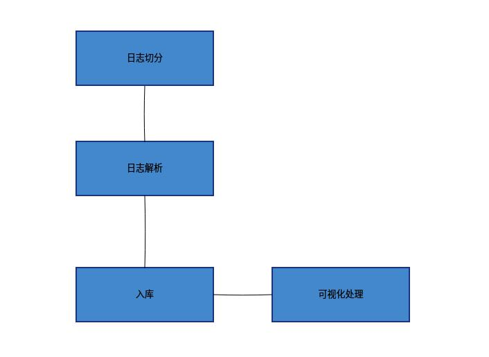
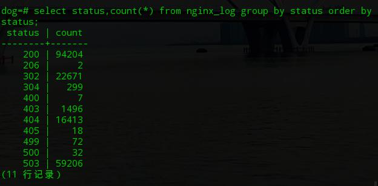
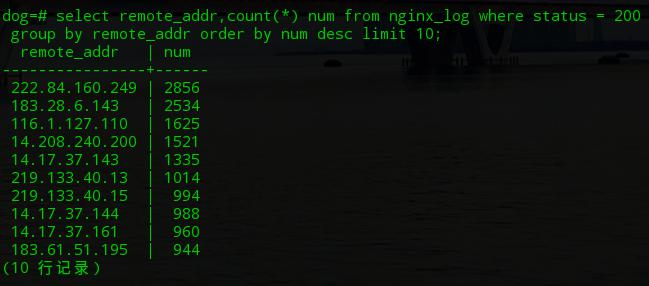
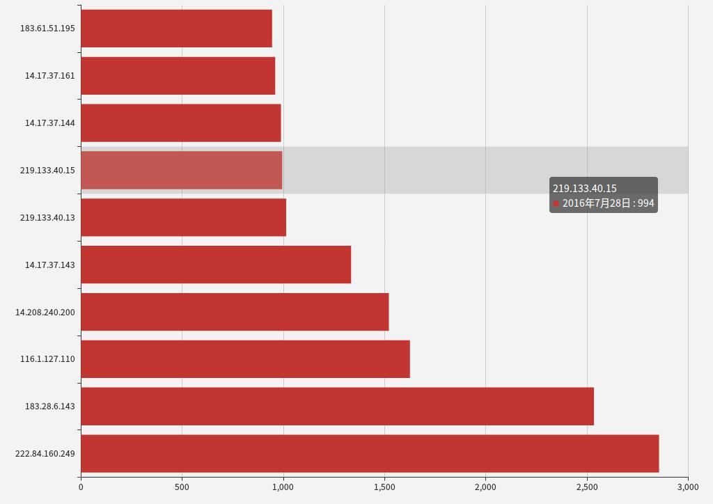

在项目开发过程中,总是离不开日志解析的工作,虽然有些时候觉得确实挺繁琐的,但是静下心来会发现有时候也是挺有趣的1件工作。
在这里,我们要从日志文件中找出IP访问最多的10条记录,然后判断其是否合法,从而采取对应的措施。
日志解析流程
正常情况下,关于Nginx日志解析的流程如下所示:

一般情况下我们会对要解析的日志提前进行切分,常用的方式是按照日期,然后保存1个星期的日志。然后接下来就是日志的解析了,在这个过程中会使用到一些工具或编程语言,例如awk、grep、perl、python。
最后的入库和可视化处理一般视业务而定,没有强制的要求。
日志查询的解决方案
而关于Nginx日志解析的常用解决方案主要有如下4种方式:
- 通过awk和grep进行解析
- 通过Postgresql外联表进行日志的映射
- 通过Python与MongoDB的组合来进行日志查询
- 通过ELK这个开源套件进行查询
其中Postgresql外联表的方式在之前公司的时候已经使用过,当然是对公司多个3GB大小的日志进行处理。而第1种和第4种解决方案没有太多的实践的经验,这里我们主要来看第2种解决方案。
日志格式
关于日志解析处理,我们比较常用的方式是使用正则表达式来进行匹配,而常用的1个库是nginxparser,我们可以直接通过pip进行安装。当然还有其他的方式来进行解析,这个要视业务而定。
在日志解析中,比较重要的是日志的格式,默认情况下Nginx的日志格式如下:
log_format main '$remote_addr - $remote_user [$time_local] "$request" '
'$status $body_bytes_sent "$http_referer" '
'"$http_user_agent" "$http_x_forwarded_for"'
'$upstream_addr $upstream_response_time $request_time;
下面我们来看实际业务中的1个应用。之前公司有1个抢微信红包的活动,当然有用户反映好几天都无法抢到1个红包。因此,我们团队成员认为可能在这个过程中存在作弊的现象,因此便决定对Nginx的日志进行解析。详细内容可以点击优化微信红包抢购系统。
下面是1条真实的日志的记录:
101.226.89.14 - - [10/Jul/2016:07:28:32 +0800] "GET /pocketmoney-2016-XiKXCpCK.html HTTP/1.1" 302 231 "-" "Mozilla/5.0 (Linux; Android 5.1; OPPO R9tm Build/LMY47I) AppleWebKit/537.36 (KHTML, like Gecko) Version/4.0 Chrome/37.0.0.0 Mobile MQQBrowser/6.2 TBS/036548 Safari/537.36 MicroMessenger/6.3.22.821 NetType/WIFI Language/zh_CN"
日志分析
通过awk进行解析
接着,我们来看下如何使用awk解析出IP访问最多的记录,关于awk语法可以参考进行学习:
dog@dog-pc:~$ awk '{a[$1]++}END{for(i in a)print i,a[i]}' nginx.log |sort -t ' ' -k2 -rn|head -n 10
111.167.50.208 26794
183.28.6.143 16244
118.76.216.77 9560
14.148.114.213 3609
183.50.96.127 3377
220.115.235.21 3246
222.84.160.249 2905
121.42.0.16 2212
14.208.240.200 2000
14.17.37.143 1993
默认情况下,awk以空格作为分隔符号,因此$1将获取到Nginx默认格式中的远程地址。在这里,我们通过定义1个字段,使用IP作为键名,如果对应的键名存在则将其数量加1处理。最后我们遍历这个字典,之后通过数量进行排序,最后通过head获取10条记录。
当然这种操作方式是有较大误差的,因为我们没有指定状态码等其他条件,下面我们来看根据状态码和请求方式这2个条件后过滤的数据:
dog@dog-pc:~$ awk '{if($9>0 && $9==200 && substr($6,2)== "GET") a[$1]++}END{for(i in a)print i,a[i]}' nginx.log|sort -t ' ' -k2 -rn|head -n 10
222.84.160.249 2856
183.28.6.143 2534
116.1.127.110 1625
14.208.240.200 1521
14.17.37.143 1335
219.133.40.13 1014
219.133.40.15 994
14.17.37.144 988
14.17.37.161 960
183.61.51.195 944
这样我们就可以将这10个IP进行分析,考虑下一步的操作,比如通过iptables组合禁止该IP的访问或限制其访问的次数等。
通过Postgresql
通过Postgresql入库后使用SQL进行查询的方式可以通过如下2种图片来查看:

在上图中主要是查看日志中请求状态码的总数量。而下图是对状态码为200的前10条IP的筛选:

可以看到基本上与上面awk解析的方式一致。
通过MongoDB进行查询
我们知道,MongoDB是1个文档型数据库,通过这个数据库我们辅助解决关系型数据库一些不太擅长的工作。
在Python中,主要的MongoDB客户端驱动是PyMongo,我们可以通过如下的方式建立1个连接:
In [1]: from pymongo import MongoClient
In [2]: client = MongoClient()由于这里我们使用的是默认的端口和地址,因此在MongoClient类中不传入任何的参数。
在这里,我们先说下我们插入到MongoDB中日志的格式:
{
"status": 302, //HTTP状态码
"addr": "101.226.89.14", //远程IP地址
"url": "-",
"req": "/pocketmoney-2016-XiCXCpCK.html", //请求的地址
"agent": "Mozilla/5.0 (Linux; Android 5.1; OPPO R9tm Build/LMY47I) AppleWebKit/537.36 (KHTML, like Gecko) Version/4.0 Chrome/37.0.0.0 Mobile MQQBrowser/6.2 TBS/036548 Safari/537.36 MicroMessenger/6.3.22.821 NetType/WIFI Language/zh_CN", //请求的user-agent
"referer": "NetType/WIFI",
"t": "2016/07/10 06:28:32", //请求的时间
"size": 231, //响应的大小
"method": "GET", //请求的方法
"user": "-" //用户名称
}
在这里我们通过Python进行解析后,组装成如上的格式后插入到MongoDB中,在这里主要用到的是MongoDB文档对象的insert_one方法插入1条记录。
db = client['log']
col = db['nginx']
data = {}
...
col.insert_one(data)接着我们开始对上述的记录进行查询操作,主要是通过MongoDB提供的map-reduce来实现聚合操作,其对应的Python代码为:
In [3]: db = client['log']
In [4]: col = db['nginx']
In [5]: pipeline = [
...: {"$match":{"status":200}},
...: {"$group":{"_id":"$addr","count":{"$sum":1}}},
...: {"$sort":{"count":-1}},
...: {"$limit":10}
...: ]
In [6]: list(col.aggregate(pipeline))
Out[6]:
[{u'_id': u'222.84.160.249', u'count': 2856},
{u'_id': u'183.28.6.143', u'count': 2534},
{u'_id': u'116.1.127.110', u'count': 1625},
{u'_id': u'14.208.240.200', u'count': 1521},
{u'_id': u'14.17.37.143', u'count': 1335},
{u'_id': u'219.133.40.13', u'count': 1014},
{u'_id': u'219.133.40.15', u'count': 994},
{u'_id': u'14.17.37.144', u'count': 988},
{u'_id': u'14.17.37.161', u'count': 960},
{u'_id': u'183.61.51.195', u'count': 944}]可以看到这个过程与之前的2种方式得到的结果是一致的。
关于可视化处理
关于可视化处理,我们可以选择一些Javascript的库,例如:
- 百度的Echarts
- d3.js及其衍生的库
对于Python,可视化处理可以使用如下的一些库:
- matplotlib
- pandas
当然还有一些其他的库这里就不一一叙述了。
下面是1个使用百度Echart绘制的界面:

看起来还是挺漂亮的。
参考文章:
http://api.mongodb.com/python/current/examples/aggregation.html